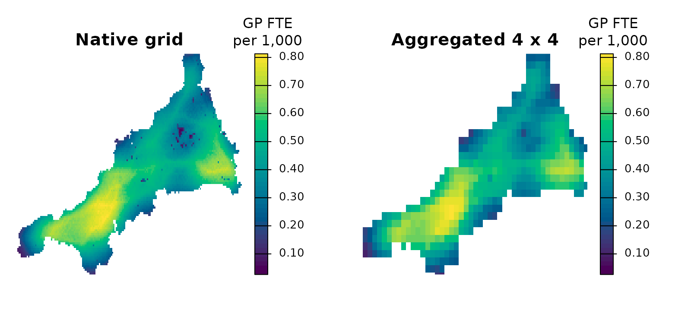

Grid resolution, support and computational cost
Source:vignettes/grid-resolution.Rmd
grid-resolution.RmdThis guide uses the bundled Cornwall GP data, described in The Cornwall GP example data.
A raster gives every origin explicit geometry and lines all inputs up cell by cell. Its cost grows with the number of cells times the number of facilities. More cells do not by themselves add information: the result can be no better than the demand and travel data behind it. This guide runs the E2SFCA of Getting started on mainland Cornwall at the native resolution of the bundled grids (about 1 km), at two coarser resolutions and at one finer resolution, and compares results, size and time. It uses the same inputs and the same 10-minute Gaussian decay.
pop <- read_spax_example("cornwall_pop.tif")
travel <- read_spax_example("cornwall_gp_travel.tif")
# Mainland only, as in the other guides
gp <- cornwall_gp |>
filter(!scilly) |>
st_drop_geometry()
travel <- travel[[gp$practice]]
pop <- trim(mask(pop, sum(travel)))
travel <- crop(travel, pop)What a dense cell-by-facility array costs
The travel grid holds one value per cell and practice, and the decay weights hold another array of the same size. The numeric payload of one such array is cells times practices times 8 bytes:
cells <- c(grid = ncell(pop), populated = sum(!is.na(values(pop))))
# 8 bytes per value, one value per cell and practice
data.frame(
cells,
practices = nrow(gp),
MiB_per_array = round(cells * nrow(gp) * 8 / 1024^2, 1)
) cells practices MiB_per_array
grid 21879 54 9.0
populated 6912 54 2.8The rectangular grid is about three times larger than its populated
part, because it also covers sea and land outside Cornwall. That is
small here, but the same arithmetic at 100 metres, or with hundreds of
facilities, reaches gigabytes. A calculation may hold travel, weights,
temporary products and outputs at the same time.
object.size() of a SpatRaster measures a
pointer or file reference, not these arrays, so measure memory and
elapsed time on the whole workflow.
Change the resolution
Demand counts can be added up exactly when cells are merged. Travel cannot: the bundled grids do not contain the road network, so a coarse cell’s travel time has to be approximated from its fine cells. Here we use the resident-weighted mean of the fine-cell minutes. Averaging travel before a nonlinear decay does not give averaged weights, so this is one explicit approximation, not a general rule. For a real study, recompute travel at the target resolution if you can.
Splitting each cell into four (factor 0.5) goes the other way: each subcell gets a quarter of the residents and its parent’s travel times. This adds cells but no information.
# Demand and travel grids at `factor` times the native cell width
at_resolution <- function(factor) {
# Native grid: unchanged
if (factor == 1) return(list(demand = pop, travel = travel))
# Finer grid: split residents evenly, copy the parent's travel times
if (factor < 1) {
k <- round(1 / factor)
return(list(demand = disagg(pop, k) / k^2, travel = disagg(travel, k)))
}
# Coarser grid: add up residents, take resident-weighted mean minutes
demand <- aggregate(pop, factor, fun = "sum", na.rm = TRUE)
minutes <- aggregate(travel * pop, factor, fun = "sum", na.rm = TRUE) /
demand
list(demand = demand, travel = minutes)
}
factors <- c(0.5, 1, 2, 4)
inputs <- lapply(factors, at_resolution)Now time the E2SFCA at each resolution. The timings are elapsed seconds on the machine that built this guide; take the median of three runs, and read them as relative costs, not as a benchmark.
# The E2SFCA of the other guides, for one resolution
fca <- function(x) {
spax_e2sfca(
demand = x$demand,
supply = gp,
distance = x$travel,
decay_params = list(method = "gaussian", sigma = 10),
demand_normalize = "identity",
id_col = "practice",
supply_cols = "gp_fte_extg"
)
}
# Median elapsed seconds of three runs at each resolution
seconds <- sapply(inputs, function(x) {
median(replicate(3, system.time(fca(x))[["elapsed"]]))
})
results <- lapply(inputs, fca)To compare the results, take each surface back to the native grid: every native cell gets the value of the cell that contains it. Then compare cell by cell, weighting by native residents.
# The native surface and residents, one value per native cell
native <- 1000 * values(results[[2]]$accessibility, mat = FALSE)
residents <- values(pop, mat = FALSE)
# One table row per resolution
summary_row <- function(k) {
# This surface on the native grid, and its own cells' residents and area
a <- 1000 * resample(results[[k]]$accessibility, pop, method = "near")
a <- values(a, mat = FALSE)
d <- values(inputs[[k]]$demand, mat = FALSE)
area <- values(cellSize(inputs[[k]]$demand, unit = "km"), mat = FALSE)
# Index per 1,000 on its own grid, and the change from the native surface
own <- 1000 * values(results[[k]]$accessibility, mat = FALSE)
change <- abs(a / native - 1)
data.frame(
factor = factors[k],
cell_km2 = round(mean(area[!is.na(d)]), 2),
populated_cells = sum(!is.na(d)),
residents = round(sum(d, na.rm = TRUE)),
seconds = seconds[k],
mean_per_1000 = round(weighted.mean(own, d, na.rm = TRUE), 3),
median_abs_change_pct = round(
100 * median(change[!is.na(residents)], na.rm = TRUE),
1
),
weighted_abs_change_pct = round(
100 * weighted.mean(change, residents, na.rm = TRUE),
1
)
)
}
comparison <- bind_rows(lapply(seq_along(factors), summary_row))
# Every resolution keeps the same residents, to within one person
stopifnot(max(abs(comparison$residents - comparison$residents[2])) <= 1)
comparison factor cell_km2 populated_cells residents seconds mean_per_1000
1 0.5 0.14 27648 541184 0.245 0.575
2 1.0 0.55 6912 541184 0.084 0.575
3 2.0 2.20 1829 541184 0.044 0.575
4 4.0 8.79 506 541184 0.036 0.575
median_abs_change_pct weighted_abs_change_pct
1 0.0 0.0
2 0.0 0.0
3 1.8 1.4
4 3.3 2.5cell_km2 is the mean area of a populated cell in square
kilometres. The native cells are 30 arc-seconds: about 0.93 km north to
south but only about 0.6 km east to west at this latitude.
Some things stay fixed. Every resolution keeps the same total residents, and the resident-weighted mean index stays at total GP FTE per 1,000 residents, because both FCA steps use the same weights. That identity says nothing about local accuracy.
What changes:
- Finer cells (factor 0.5) quadruple the cells and take several times longer, yet reproduce the native surface exactly: no information was added.
- Coarser cells are cheaper, though on a grid this small the saving is modest. The local pattern changes by a few per cent: the two change columns give the median and the resident-weighted mean of the absolute percentage change from the native surface, over native cells. A 10-minute decay is wide compared with cells of 2 to 9 square kilometres, which likely keeps the change small; do not assume the same for a shorter decay scale or a binary catchment without repeating the comparison.
# The native surface and the 4 x 4 surface, both on the native grid
pair <- c(
1000 * results[[2]]$accessibility,
resample(1000 * results[[4]]$accessibility, pop, method = "near")
)
names(pair) <- c("Native grid", "Aggregated 4 x 4")
plot(
pair,
axes = FALSE,
col = hcl.colors(50, "viridis"),
range = range(values(pair), na.rm = TRUE),
mar = c(1, 1, 2, 6),
plg = list(title = "GP FTE\nper 1,000")
)
Both maps show GP FTE per 1,000 residents on one colour scale. The coarse surface keeps the broad pattern but blurs the local detail, including the low values on Bodmin Moor, and its blocks also cover cells that the native grid leaves empty at the coast.
Requested outputs matter too
The same rule applies beyond FCA: request only the outputs you need. A regional table or one value per origin is far smaller than a full origin-by-facility flow matrix, and a map needs an explicit spatial mapping. The experimental allocation workflow prepares its inputs once and reuses them across starts and predictions. The facility bootstrap deliberately retains all its attempts, which makes it a validation example, not a benchmark.
Before changing an implementation for speed, record the input dimensions, active support, requested outputs, runtime, peak memory and numerical agreement, and compare runs that keep the same outputs and do not overlap with other heavy jobs.